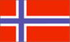

(territory of Norway)
{kind=link}

|
Jan Mayen (territory of Norway) |
 |
| Introduction Geography People Government Economy Communications Transportation Military Transnational Issues | ||
|
|
||
| Jan Mayen | Introduction | Top of Page |
| Background: | This desolate, mountainous island was named after a Dutch whaling captain who indisputably discovered it in 1614 (earlier claims are inconclusive). Visited only occasionally by seal hunters and trappers over the following centuries, the island came under Norwegian sovereignty in 1929. The long dormant Beerenberg volcano resumed activity in 1970; it is the northernmost active volcano on earth. |
| Jan Mayen | Geography | Top of Page |
| Location: | Northern Europe, island between the Greenland Sea and the Norwegian Sea, northeast of Iceland |
| Geographic coordinates: | 71 00 N, 8 00 W |
| Map references: | Arctic Region |
| Area: |
total:
373 sq km
land: 373 sq km water: 0 sq km |
| Area - comparative: | slightly more than twice the size of Washington, DC |
| Land boundaries: | 0 km |
| Coastline: | 124.1 km |
| Maritime claims: |
contiguous zone:
10 NM
continental shelf: 200-m depth or to the depth of exploitation exclusive economic zone: 200 NM territorial sea: 4 NM |
| Climate: | arctic maritime with frequent storms and persistent fog |
| Terrain: | volcanic island, partly covered by glaciers |
| Elevation extremes: |
lowest point:
Norwegian Sea 0 m
highest point: Haakon VII Toppen/Beerenberg 2,277 m |
| Natural resources: | none |
| Land use: |
arable land:
0%
permanent crops: 0% permanent pastures: 0% forests and woodland: 0% other: 100% |
| Irrigated land: | 0 sq km (1993) |
| Natural hazards: | dominated by the volcano Haakon VII Toppen/Beerenberg; volcanic activity resumed in 1970 |
| Environment - current issues: | NA |
| Geography - note: | barren volcanic island with some moss and grass |
| Jan Mayen | People | Top of Page |
| Population: |
no indigenous inhabitants
note: there are personnel who operate the Long Range Navigation (Loran-C) base and the weather and coastal services radio station (July 2001 est.) |
| Jan Mayen | Government | Top of Page |
| Country name: |
conventional long form:
none
conventional short form: Jan Mayen |
| Dependency status: | territory of Norway; administered from Oslo through a governor (sysselmann) resident in Longyearbyen (Svalbard); however, authority has been delegated to a station commander of the Norwegian Defense Communication Service |
| Legal system: | the laws of Norway, where applicable, apply |
| Flag description: | the flag of Norway is used |
| Jan Mayen | Economy | Top of Page |
| Economy - overview: | Jan Mayen is a volcanic island with no exploitable natural resources. Economic activity is limited to providing services for employees of Norway's radio and meteorological stations located on the island. |
| Jan Mayen | Communications | Top of Page |
| Radio broadcast stations: |
AM NA, FM NA, shortwave NA
note: there is one radio and meteorological station (1998) |
| Internet Service Providers (ISPs): | 13 (Jan Mayen and Svalbard) (2000) |
| Jan Mayen | Transportation | Top of Page |
| Waterways: | none |
| Ports and harbors: | none; offshore anchorage only |
| Airports: | 1 (2000 est.) |
| Airports - with unpaved runways: |
total:
1
1,524 to 2,437 m: 1 (2000 est.) |
| Jan Mayen | Military | Top of Page |
| Military - note: | defense is the responsibility of Norway |
| Jan Mayen | Transnational Issues | Top of Page |
| Disputes - international: | none |